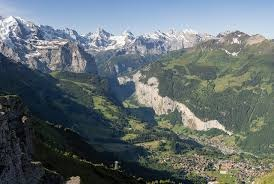
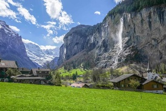
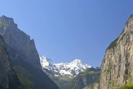
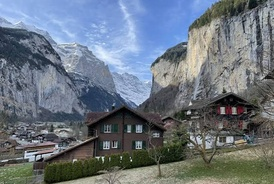

Descripcion
Lauterbrunnen es una comuna suiza del cantón de Berna, situada en el distrito administrativo de Interlaken-Oberhasli. Al igual que Grindelwald, Lauterbrunnen se ha convertido en un destino turístico muy popular, ya que está conectado por tren hacia Interlaken y hacia Kleine Scheidegg, donde comienza el tren del Jungfrau, la línea férrea más alta de Europa y la puerta de entrada a la zona protegida de Jungfrau-Aletsch.
La primera vez que aparece mencionado el valle de Lauterbrunnen, durante el siglo XIII, estaba en posesión del freiherr de Wädenswil. En 1240 este freiherr vendió el valle de Sefinen al monasterio de Interlaken, quien comenzaron a extender su influencia por el valle y sus alrededores. Sin embargo, en torno al 1300, el señor de Thun comenzó a poblar el cercano valle de Lötschen y las tierras altas del valle de Lauterbrunnen con sus ciudadanos que hablaban el dialecto valesano alemán. En 1346, las villas valesanas de Lauterbrunnen, Gimmelwald, Mürren, Sichellauenen y Trachsellauenen tenían sus propios gobiernos y una cierta autonomía con respecto al monasterio. Tres años más tarde, la mayoría del oberland de Berna se rebeló fallidamente contra el monasterio, y las villas valesanas sufrieron la ira de los eclesiásticos. En el siglo XV, las villas del valle formaban parte de la gran feligresía de Gsteig bei Interlaken. En 1528, la ciudad de Berna adoptó la nueva fe tras la Reforma protestante y comenzó a imponerla en el oberland. Lauterbrunnen se unió a otras villas en una rebelión fallida y el monasterio de Interlaken fue secularizado y anexado, convirtiéndose Lauterbrunnen en el nuevo centro de la feligresía protestante.
Galeria
Haz clic en cualquier imagen para verla en detalle.
 |
 |
 |
 |
Itinerarios
| Hora | Actividad | Lugar | Duracion |
|---|---|---|---|
| 8:00 AM | Desayuno | Restaurante local | 1 hora |
| 9:00 AM | Caminata por el pueblo | Pueblo de Lauterbrunnen | 1 hora |
| 10:00 AM | Visita a la cascada Staubbach | Staubbachfall | 1 hora 30 minutos |
| 11:30 AM | Recorrido por el valle | Valle de Lauterbrunnen | 2 horas |
| 01:30 PM | Almuerzo | Restaurante local | 1 hora 30 minutos |
| 03:00 PM | Visita a las cascadas de Trummelbach | Trummelbachfalle | 2 horas |
| 05:00 PM | Tiempo libre y fotografias | Centro del pueblo | 1 hora |
| 06:00 PM | Cena | Restaurante local | 1 hora |
Otras actividades
- Senderismo
Recorrer los senderos del valle de Lauterbrunnen y disfrutar las montanas, los campos y las cascadas. - Visita a Murren
Conocer el pequeno pueblo alpino de Murren, ubicado en las montanas y accesible mediante teleferico y tren. - Paseo en el teleferico
Subir en el teleferico para observar una vista panoramica del valle y de las montanas de los Alpes suizos. - Ciclismo
Alquilar una bicicleta y recorrer las rutas del valle, pasando por pueblos, cascadas y paisajes naturales. - Visita al Jungfraujoch
Realizar una excursion en tren hacia Jungfraujoch, uno de los puntos turisticos mas famosos de Suiza. - Parapente
Volar sobre el valle acompanado por un instructor y contemplar Lauterbrunnen desde el aire.